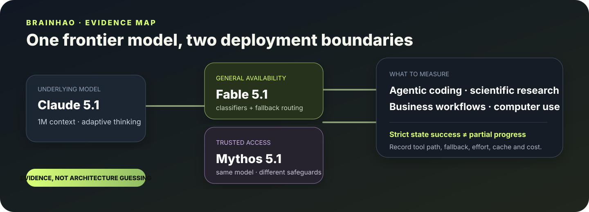

ANTHROPIC · FABLE SERIES · 2026-09-01
ClaudeFable 5.1
同一前沿模型，两种部署边界。Fable 5.1 把 1M context、adaptive thinking、长时程 agent 和显式 safeguards / fallback 放进一般可用接口。
1M context128K outputAdaptive thinkingText + image → text

Where the gain lands
BenchmarkFable 5.1Fable 5Opus 5
Agentic scientific research52.624.729.0
Agentic coding / terminal55.842.052.3
Business workflows31.417.126.9
Computer use · strict41.736.139.6
最大信号不是“会答更多题”，而是能在终端、应用和长轨迹里推进更多真实工作；但 strict success 仍明显低于 partial progress。
One model · two boundaries
Fable 5.1
General availability。部署 classifiers 与 fallback，面向更广泛使用。
Mythos 5.1
Trusted access。底层模型相同，安全边界和开放范围不同。
Economics
- $10 / MTok input
- $50 / MTok output
- $0.25 / MTok cache read
- 官方估计典型任务约省 25%，高度 agentic 任务最高约 45%
Research lens

评测一条 Fable 5.1 轨迹时，必须同时记录：effort、工具路径、最终应用状态、strict / partial success、cache、fallback 与每成功任务成本。否则测到的是一个被压扁的文本结果，不是部署中的 agent system。